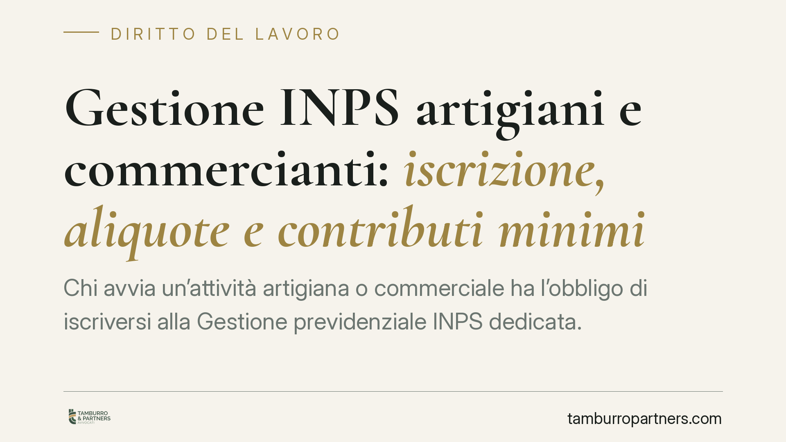

Gestione INPS artigiani e commercianti: iscrizione, aliquote e contributi minimi
Chi avvia un'attività artigiana o commerciale ha l'obbligo di iscriversi alla Gestione previdenziale INPS dedicata. L'iscrizione fa scattare contributi dovuti su una base minima, a prescindere dal reddito effettivo. Capire soglie, aliquote e requisiti di partecipazione all'attività è essenziale per evitare sanzioni e programmare i costi fissi dell'impresa.

Il quadro generale
Artigiani e commercianti che svolgono un'attività autonoma in modo abituale e prevalente sono tenuti a iscriversi alla Gestione speciale INPS dei lavoratori autonomi. L'obbligo non riguarda solo il titolare: si estende ai soci di società di persone che partecipano al lavoro dell'impresa e ai familiari coadiuvanti che vi collaborano con continuità.
Il presupposto è la partecipazione personale all'attività, non la mera titolarità di quote. Un socio che si limita a conferire capitale, senza prestare lavoro, di norma non è soggetto all'iscrizione. La distinzione conta molto nella pratica, perché genera contenzioso ricorrente con l'ente.
Inquadramento normativo
L'obbligo contributivo trova fondamento nella legge n. 233/1990, che ha riformato la contribuzione degli artigiani e degli esercenti attività commerciali. La norma fissa la base di calcolo sul reddito d'impresa dichiarato ai fini IRPEF e stabilisce un minimale contributivo annuo, cioè una soglia di reddito al di sotto della quale i contributi restano comunque dovuti nella misura minima.
La disciplina si intreccia con l'art. 1, comma 203, della legge n. 662/1996 per i commercianti, che ha introdotto anche un contributo aggiuntivo destinato all'indennizzo per la cessazione dell'attività commerciale. Le aliquote e gli importi minimi vengono aggiornati ogni anno da apposita circolare INPS: è quindi indispensabile verificare i valori dell'anno di riferimento, perché mutano con periodicità annuale.
Come si calcolano i contributi
Il meccanismo si articola su due livelli.
Sul reddito entro il minimale si applicano i contributi fissi, dovuti anche in assenza di reddito o in perdita. Si versano in quattro rate, con scadenze trimestrali.
Sulla parte di reddito eccedente il minimale, ed entro un massimale, si applicano i contributi a percentuale, calcolati con l'aliquota vigente e versati con il modello F24 secondo le scadenze fiscali (acconti e saldo).
È prevista una maggiorazione dell'aliquota sulla quota di reddito che supera una determinata soglia. Chi è iscritto per la prima volta e ha meno di 21 anni beneficia, in genere, di una riduzione temporanea.
Cosa cambia per chi avvia l'attività
Il punto critico è che il costo previdenziale non è azzerabile nei primi anni. Anche l'impresa in perdita paga i contributi minimi. Chi apre partita IVA come artigiano o commerciante deve quindi mettere a bilancio questa uscita fissa fin da subito.
Attenzione al doppio inquadramento: chi svolge in parallelo attività da cui derivi iscrizione ad altra gestione può trovarsi in una situazione di potenziale sovrapposizione contributiva. Va analizzata caso per caso, perché non sempre è dovuta la doppia contribuzione.
Per i familiari coadiuvanti, l'INPS può contestare l'omessa iscrizione anche a distanza di anni, con recupero dei contributi e sanzioni. La prova della collaborazione abituale diventa allora decisiva.
Cosa fare in concreto
- Verifica l'obbligo prima di avviare l'attività. Accerta se ricorre la partecipazione personale, abituale e prevalente al lavoro dell'impresa: è il vero discrimine tra iscrizione dovuta e non dovuta.
- Controlla gli importi dell'anno in corso. Consulta la circolare INPS aggiornata su minimale, massimale e aliquote: i valori cambiano ogni anno e influenzano direttamente la liquidità.
- Programma le scadenze. Segna in calendario le quattro rate dei contributi fissi e le date di acconto e saldo per la quota a percentuale, per evitare sanzioni e interessi.
- Regolarizza i familiari coadiuvanti. Se collaborano con continuità, iscrivili tempestivamente: la sanatoria tardiva è quasi sempre più onerosa dell'adempimento corretto.
- Valuta il caso di doppia attività. In presenza di più fonti di reddito autonomo o subordinato, richiedi una verifica sulla gestione competente per evitare versamenti non dovuti o omissioni.
La gestione previdenziale dell'autonomo non è un adempimento formale: incide sui costi fissi e, in prospettiva, sulla pensione. Consigliamo di impostare fin dall'inizio un monitoraggio ordinato di iscrizioni e scadenze, coordinando l'aspetto contributivo con quello fiscale.
Disclaimer
Contributo informativo a cura di Tamburro & Partners - Avv. Giuseppe Tamburro. Non costituisce parere legale.
Ogni storia di lavoro ha i suoi tempi.
Se gestisci HR e vuoi un confronto su contenzioso, ispezioni o licenziamenti, scrivi allo studio. Ti rispondiamo entro un giorno lavorativo.